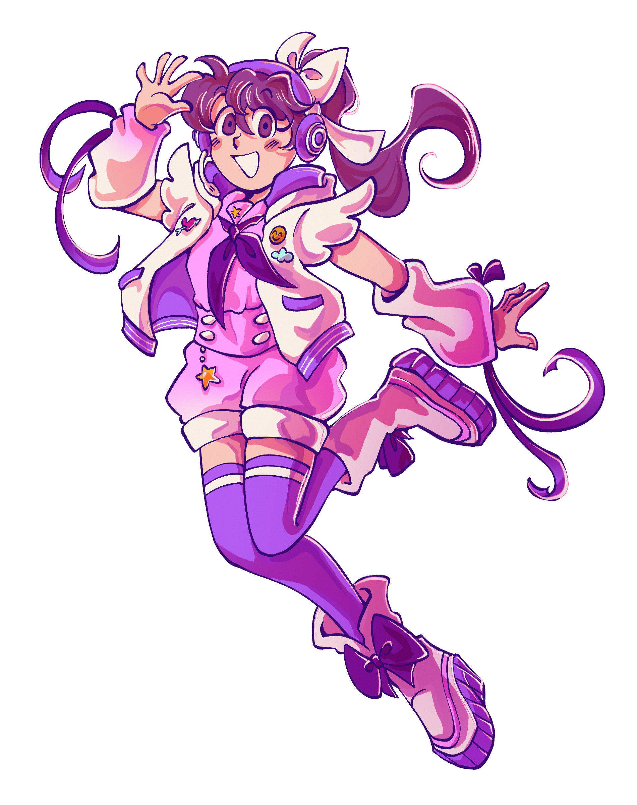

- intro
- protodachi
- summer vacation
- winter break
- friends
kandyloid, also known as kandy, is an utau voicebank created by mayordea released in 2025. she is available in english and
japanese.
her first voicebank, “PROTODACHI” (from prototype + tomodachi), was her prototype voicebank created
using tomodachi life speech samples, specifically from the web recreation talkmodachi created by
dylanpdx. PROTODACHI is a monopitch (no specific pitch, but around D4 is ideal) english c+v and has
a robotic voice. her visual assets were created using the online mii creator.
her other english voicebank, “summer vacation”, is also english c+v and is bipitch (C4 and G4) with
an additional “power” voice color. her vocal samples were recorded by mayordea and were pitch
shifted by 3 semitones.
her japanese voicebank, “winter break”, was conceived originally as a japanese cv but was reworked to
a cvvc for additional smoothness. like her english c+v, the japanese cvvc is bipitch (C4 and G4)
with a “power” append, and her samples were pitched shifted by 3 semitones as well.
